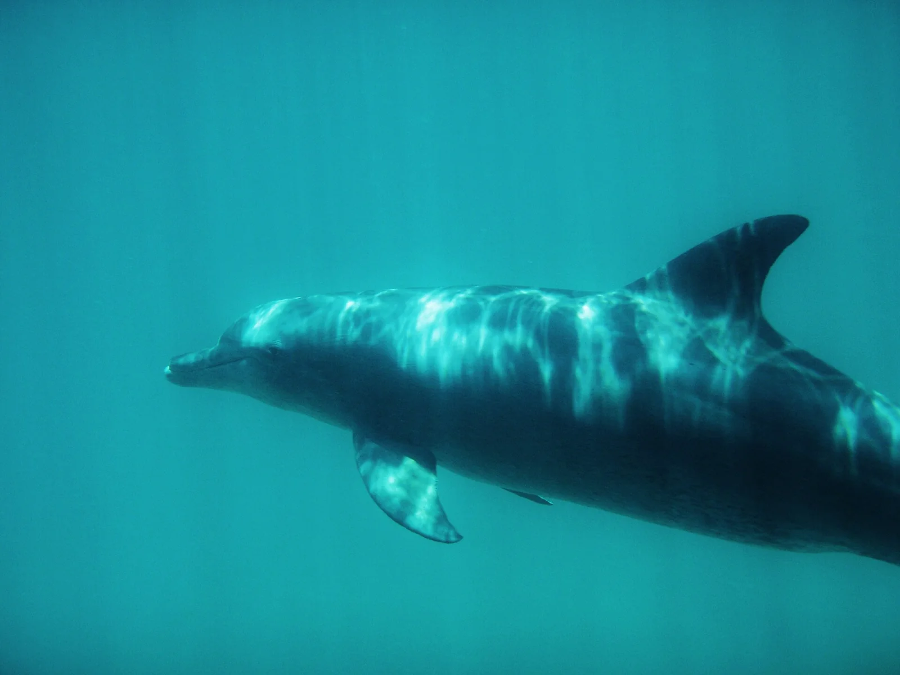

Kisite-Mpunguti
Shimoni, Kenya · snorkeling, plongée

Parc marin national au sud de la côte kényane, près de la frontière tanzanienne, accessible en bateau depuis Shimoni ou Wasini. Récifs coralliens peu profonds, avec des dauphins souvent aperçus pendant la traversée.
- Lieu
- Shimoni, Kenya
- Niveau
- Variable selon les conditions
- Activités
- snorkeling, plongée
- Type d'eau
- Mer / océan
- Coordonnées
- -4.71, 39.36 (position approximative du secteur)
Dangers à connaître
- Courants de marée autour des récifs.
- Soleil intense en bateau : lycra et crème solaire respectueuse du récif.
Le conseil d'Ocean Buddy
Pars avec un opérateur agréé et garde le gilet si tu n’es pas à l’aise en pleine eau.
Ouvrir dans Ocean Buddy Télécharger sur l'App Store
Source : Fiche Ocean Buddy · septembre 2026 · à vérifier localement.